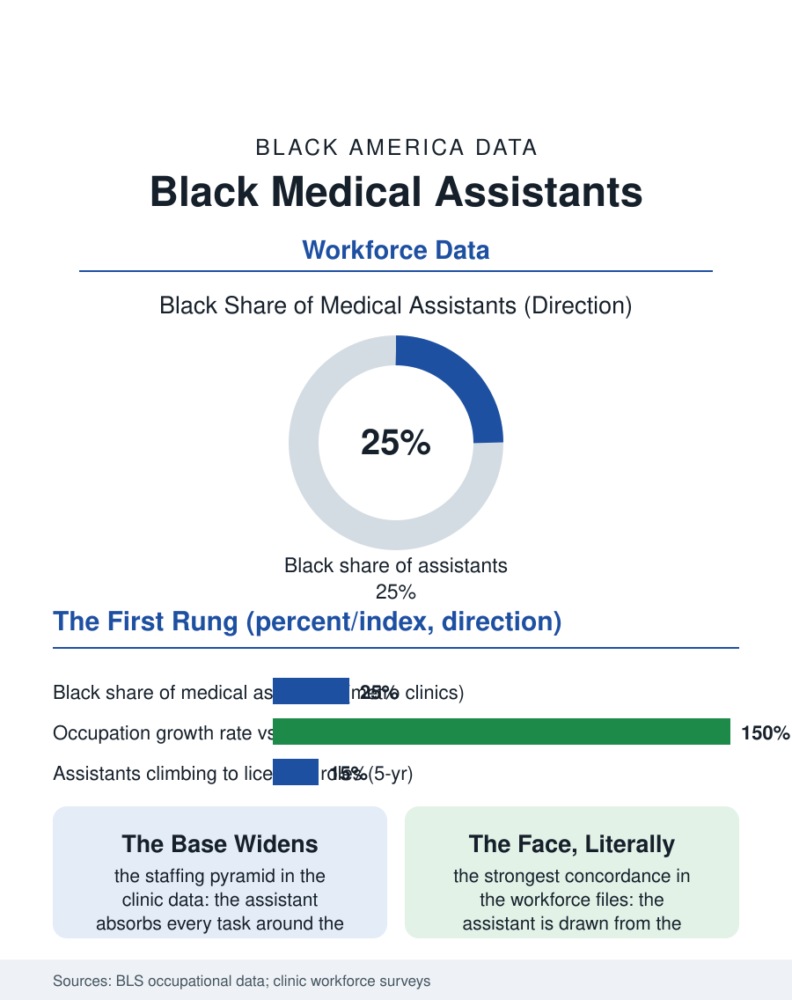

Black Employment
The First Contact: Black Medical Assistants
The clinic's universal worker and its first contact, the ladder's true first rung, taking the number the whole visit organizes around. The assistant file.

Medical assisting is the clinic's universal worker, rooming the patient, taking the vitals, drawing the blood, working the phone and the record in one shift, and it is among the fastest-growing and most Black of the health occupations, the clinic door's first human contact for much of Black America's actual care. This article reads the medical assistant file.
The Universal Worker
The occupation's growth in the Bureau's projections perennially leads the health support list, driven by the clinic model's arithmetic: the physician's and the practitioner's time priced too high for the tasks the visit requires around the examination, the assistant absorbing them all, so that the modern clinic's staffing pyramid has the assistant at its base in widening proportion. The credential file is the occupation's open frontier: the certificate programs of the community colleges and the for-profit schools supply most entrants, the certification voluntary in most states and the employer's preference in the better systems, the wage running in the high teens to the low twenties in the current data with the system's variation, and the workforce's composition in the surveys heavily female and, in the metro clinics, substantially Black and Latina, the occupation being one of the health ladder's true first rungs, a year or less of schooling from the high school's exit to the clinic's floor. The float and the travel tiers of the occupation are the market's newest layer, the staffing agencies placing the experienced assistant across the clinics' vacancies at the premium the shortage commands, an arrangement that reprices the occupation's experience while dissolving the neighborhood clinic's continuity, the file's familiar trade in a new uniform. Against it stands the clinic-employed veteran whose twenty years in the same rooms constitute a clinical memory no agency chart carries, the patients' histories held in the person the schedule keeps trying to make interchangeable.
The Rung and Its Traffic
The ladder's traffic is the file's honest test: the medical assistant's chair is advertised as the health career's entry, and the longitudinal data show the traffic in both directions, the assistants who climb to the nursing and the technician licenses on the clinic's tuition benefit where it exists, and the larger flow for whom the rung is the destination, the occupation's own mastery, the phlebotomy's difficult stick and the difficult patient's rooming, being a craft the clinics prize and the wage file undervalues in the pattern of the care files. The scope file is the occupation's current expansion, the assistants administering the immunizations and the medications under the delegation the states keep widening, the scribing and the care coordination of the value-based clinic being the newest tasks to settle at the base of the pyramid, each expansion raising the file's standing question of the credential and the wage that should follow the scope.
The First Contact
The medical assistant file closes on the rooming's moment, because the assistant is the visit's first and often its longest human contact, the vitals and the history and the concern heard first at her station, so that the clinic's quality as the Black patient experiences it is substantially her practice, the trust file's daily manufacture at the wage the file records. The concordance data apply here at their strongest: the assistant drawn from the clinic's own neighborhood is the system's face in the literal sense the other files use as metaphor. The bureau counts the occupation in the three quarters of a million and climbing, its Black share in the clinic metros among the health occupations' highest. The file's last entry is the blood pressure cuff's reading called down the hall, the number the whole visit will organize around, taken by the worker the system pays least in the room and trusts first, which is the occupation's definition and the clinic's confession in a single measurement. The externship is the occupation's audition in the hiring data, the certificate program's clinical placement converting to the offer at rates the schools advertise because they are true, so that the placement office's relationships with the clinics are the program's real curriculum, and the student whose externship site is the neighborhood clinic begins the concordance's career in the same rooms where she will practice it.
More in Black Employment
The Black Unemployment Rate: The Two-to-One Pattern
Black unemployment runs at roughly twice the White rate — 5.5 percent against 3.3 percent in annual averages — a ratio stable across five decades of federal data. How it is measured and why it persists.
Black Median Weekly Earnings: The 80-Cent Ratio
Black full-time workers earn a median of about $900 a week — roughly 80 cents for every dollar White workers earn. The BLS earnings data by group, gender, and occupation.
Black Labor Force Participation: Working at National Rates
Black labor force participation runs at roughly the national rate — and Black women participate at higher rates than White women. The BLS participation data.
Source: Bureau of Labor Statistics occupational employment and projections data; medical assisting certification body workforce data.